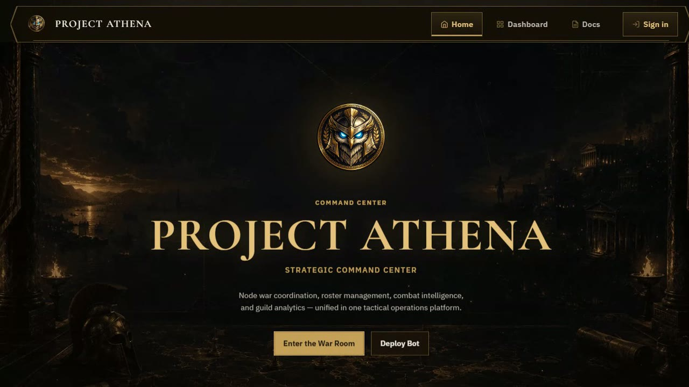
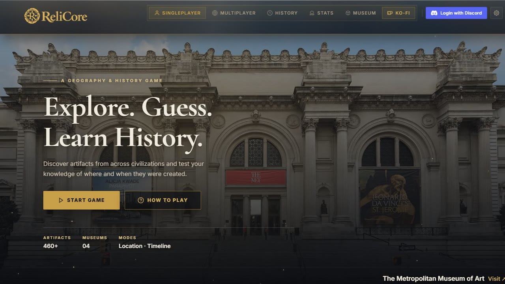

Projects
-

Project Athena
Discord bot and web dashboard that runs Black Desert Online guilds: Node War rosters, a live war map, player stats read from scoreboard screenshots, and an idle fishing game.
- Event manager
- Live war map
- Node War stats
- Scoreboard OCR
- Fishing game
-

Relicore
Guess where and when real museum artifacts were made, on a world map.
-

AgentPresence
Shows which AI coding agent you're using as your Discord status.
-

asciify-ps
Windows 2000-style desktop app that turns images into coloured ASCII art.